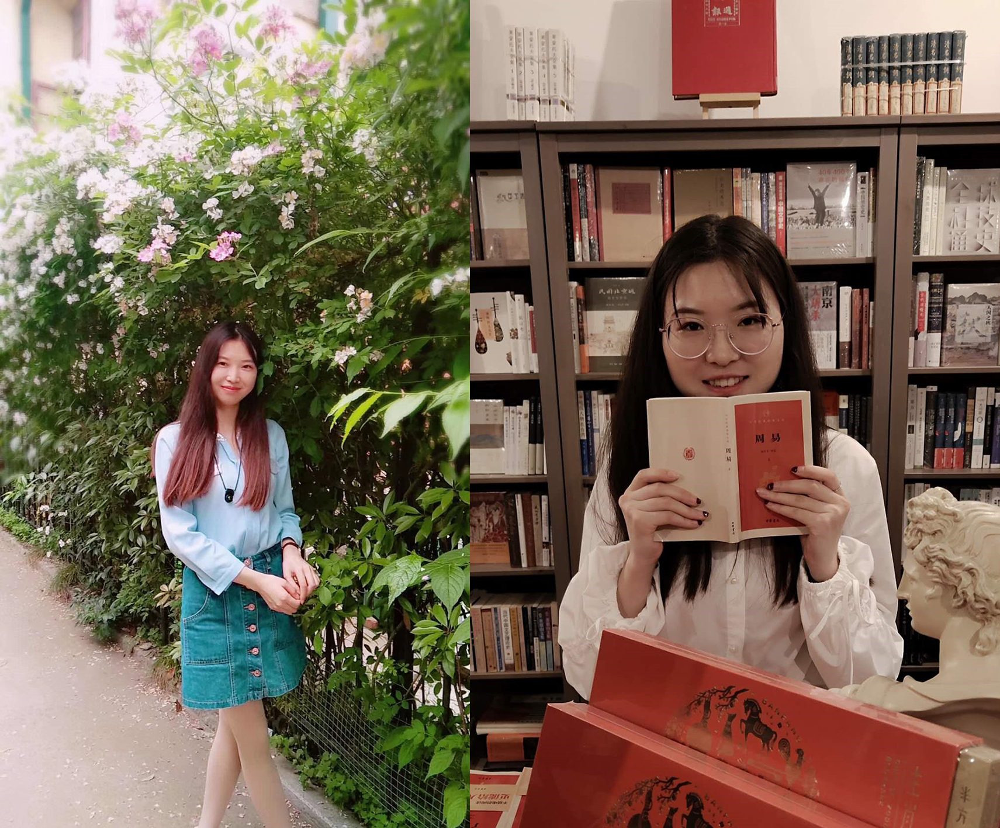
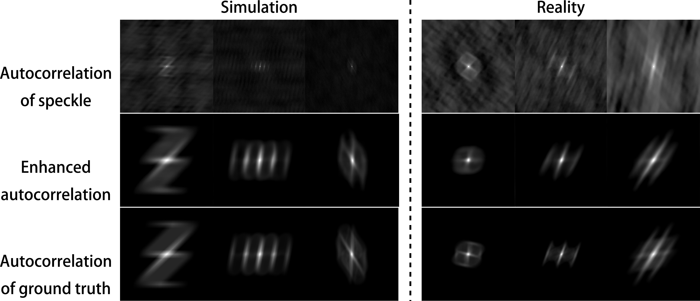
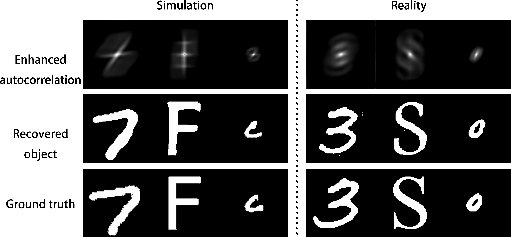
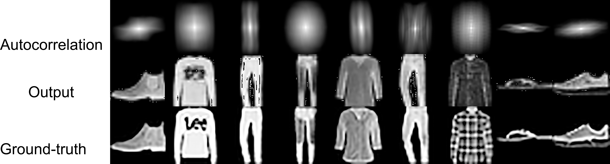

Qianqian ChengI am a 2rd year PhD candidate at Nanjing University of Science and Technology, supervised by Professor Lianfa Bai and Researcher Jing Han. My major is Optical Engineering. E-mail : qianqiancheng2018@njust.edu.cn |
 |
|   |
Recovering object from speckle pattern which is imaging through multiple scattering media. Focused on multiple scattering media, low-resolution and high-noise, I propose a new method, using the autocorrelation as a bridge to recover object from low-resolution and noised speckle pattern. This method utilized autocorrelation as physical constraints has ability to solve ill-posed inverse problem and improve the robustness to noise. |
|
Only via CNN, the MNIST-Fashion and Berkeley Segmentation Dataset have been successfully recovered preliminary. So my next work is improving the evaluation indicators in MNIST-Fashion, utilizing traditional algorithms and machine language to recover natural image. |
 |
X-ray detection based on complementary metal-oxide-semiconductor sensorsr
Qian-Qian Cheng,Chun-Wang Ma, Yan-Zhong Yuan, Fang Wang, Fu Jin, Xian-Feng Liu Nuclear Science and Techniques, 2019
Design of the New Remote Measurement System for Low－Energy Radiation (In Chinese)
Song-Ling Zhang,Qian-Qian Cheng,De-Fei Guo, Chun-Wang Ma, Fang WangNuclear Electronics＆Detection Technology, 2017